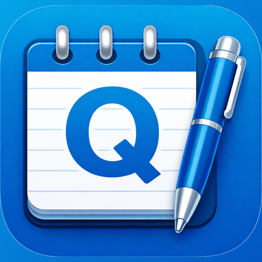

QNote
App de notas para Android · Notes app for Android
¿Qué es QNote?
QNote es una libreta de notas sencilla y rápida para el día a día, hecha por Web Business Tools. Funciona sin crear cuenta: tus notas se guardan en tu teléfono.
- Notas con renglones numerados, casillas para tachar lo que ya hiciste y 10 estilos de letra.
- Hoja Bond: texto con negrita, cursiva, subrayado, tamaños de letra y listas.
- Notas de voz dentro de tus notas de renglones.
- Recordatorios con fecha y hora, que abren la nota al tocar la notificación.
- Notas privadas con PIN de 6 dígitos.
- Copia de seguridad opcional en tu Google Drive, manual o automática.
¿Por qué QNote pide acceso a tu cuenta de Google?
Solo si activas la copia de seguridad. QNote pide dos permisos:
- Carpeta privada de la app en tu Google Drive (
drive.appdata): para guardar y restaurar la copia de tus notas y audios. QNote no puede ver ni tocar ningún otro archivo de tu Drive. - Tu dirección de correo (
email): para mostrarte en la app qué cuenta guarda la copia.
La copia va cifrada (HTTPS) directamente entre tu teléfono y Google. El desarrollador no recibe tus notas, no las vende ni las comparte, y no las usa para publicidad. Puedes cerrar sesión y borrar la copia cuando quieras: consulta la sección para eliminar tus datos.
What is QNote?
QNote is a simple, fast notebook for everyday notes, made by Web Business Tools. No sign-up needed: your notes are stored on your phone.
- Lined notes with numbered lines, checkboxes to cross things off and 10 font styles.
- Bond paper: rich text with bold, italics, underline, font sizes and lists.
- Voice notes inside your lined notes.
- Reminders with date and time; tapping the notification opens the note.
- Private notes protected with a 6-digit PIN.
- Optional backup to your Google Drive, manual or automatic.
Why does QNote ask for access to your Google Account?
Only if you turn on backup. QNote requests two permissions:
- The app's private folder in your Google Drive (
drive.appdata): to save and restore the backup of your notes and recordings. QNote cannot see or change any other file in your Drive. - Your email address (
email): to show you in the app which account holds the backup.
The backup travels encrypted (HTTPS) directly between your phone and Google. The developer does not receive your notes, does not sell or share them, and does not use them for advertising. You can sign out and delete the backup at any time: see the data deletion section.